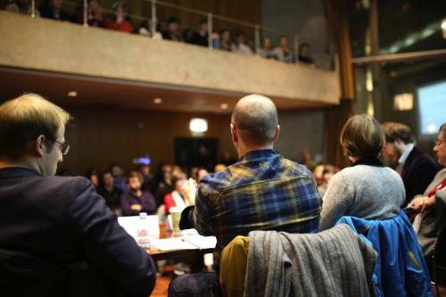

‘History will judge us poorly’
On 14th September last year, Iraqi state press reported that three academics from the University of Mosul, Dr Hasan Jasem Mahmood and Professors Khasem Al-Allaf and Tarek Muatez Al-Mytoty, had been publically executed by ISIS. If their execution, about which details are scarce, fitted the modus operandi of ISIS, they would have been brought into the centre of the city and beheaded.
Recent conflicts in the Middle East have created a movement of people on a scale not seen in recent years. The UNHCR estimates that there are currently 519,660 Iraqi refugees and asylum seekers and 4.6 million registered Syrian refugees.
Though Cambridge has a proud history of providing shelter and support to academics, and has hosted academics from countries including Iran, Iraq, Libya and Pakistan in recent years, there are currently no refugee or at-risk academics at the university. There’s an increasing feeling among many students that the university could be doing more. Academics met on Wednesday to discuss how universities should respond to the refugee crisis and assist at-risk academics.
Before the event I met Stephen Wordsworth, Executive Director of the Council for At-Risk Academics (CARA), in the bar at King’s. A softly-spoken man and self-deprecating throughout, he constantly re-emphasised the narrow scope of CARA’s operation. CARA currently works with 112 universities across the country, of which Wordsworth claims about 90 are actively accepting at-risk academics. “We’re working on the other 22,” he says.
We spoke about the problems posed by Oxbridge’s collegiate systems, which throws up a twisted version of the admissions system all student applicants face for the at-risk academics. “At most normal universities, if you like, you essentially go to one person,” Wordsworth told me, “with Oxford and with Cambridge things are more complicated”.
Until a wider system is formed, CARA could benefit from individual colleges showing their interest – for now, they “don’t know which are willing to help”.
After our discussion, we went into King’s College’s Keynes Hall. The talk was packed: all the seats were full, and students were sitting on the floor and the edge of the stage. As with any talk at Cambridge, there was a smattering of older attendees and university academics, but the vast majority of those present were younger members of the student body.
Wordsworth was joined on the panel by Alex Teytelboym, Otto Poon Research Fellow (a title which elicited a titter from the audience) at the Institute for New Economic Thinking at the University of Oxford; Thomas Jeffrey Miley, lecturer of Political Sociology in the Department of Sociology; and Shana Cohen, Deputy Director of the Woolf Institute and a research associate with the Department of Sociology.
Teytelboym spoke first. He presented with the wide-eyed optimism that seems to often affect economists, as though the solutions to all Europe’s headaches could be solved with beautiful simplicity. He criticised the government for its failure to take in more refugees, noting that in 1972 Britain took in 27,000 Ugandan Asians fleeing Idi Amin in just 90 days.
He and a partner are proposing a “Local Refugee Match”, creating a system in which refugees can choose the region where they want to live, and to dispel the notion, put forward by German Federal Minister of the Interior, Thomas de Maizière, that asylum seekers should not have the right to “choose the states where they are seeking protection”. He emphasised the need for local councils to offer what support they can in accepting refugees, saying that “central government has no idea” about the reality of the situation.
Miley offered a similarly damning indictment of the government, and people at large. He said that there is “consensus amongst scientific and academic communities” that has not yet spread to the wider population. He spoke of the need for the university to use its influence to combat what he described as a “poisonous ideological atmosphere” around the debate on refugees and migration.
His criticisms of the university are sure to ruffle feathers: he said that the university’s failure to act to educate the population and to combat the misinformation found in the “tabloid press” was part of a wider existential crisis for the university. Where Teytelboym seemed imbued with an irresistible energy, there was a resignation and anger to Miley’s criticisms.
“For the most part the university operates as a corporate unit, and the university as individuals on a personal level are keeping their mouths shut. I think history will judge us poorly about this.”
Speaking to me after the event, Miley described a “crisis of imagination” among the students of Cambridge, saying the student body had to “stop deferring power to people who are greedy, irresponsible and aggressive”. He spoke of the university’s “links to the people who make decisions,” and the ability of the “old-boys’ network model” to effect change higher up in the government.
“For the most part the university operates as a corporate unit,” he said, “and the university as individuals on a personal level are keeping their mouths shut. I think history will judge us poorly about this”.
Miley’s stances (and frequent use of the term “neoliberalism”) occasionally made his speech seem to echo the more lucid moments in The Guardian’s comment section. There would be an almost simplistic ease to dismissing Miley as a “lefty”, but when one compares the modern student reaction to the concerted campus activism of the ’70s and ’80s, it’s easy to see from where his frustration arises.
Cohen spoke about the efforts being made by individual wealthy entrepreneurs, particularly those from the USA, in providing services to refugees. She cited the example of Christopher Catrambone, a businessman from Louisiana, who founded the Malta-based Migrant Offshore Aid Station (MOAS), the “first privately-funded mission to assist migrants at sea”.
She posited the question “Is it enough to just create a bursary?”, and backed up Miley’s insistence that the students of Cambridge must push the university to do more. She said that the present situation should “force us to overcome a culture of commercialisation… is it just about skills?”
Wordsworth finished the speeches, speaking about the remarkable ability those in conflict zones have to communicate with the outside world, describing how “one guy literally called us from a basement in Mosul after ISIS had taken over”.
For students spurred to action by the talk, there was an immediate outlet: a petition was presented at the end of the event, calling on the university to “commit publicly to supporting at-risk academics granted admittance to the University of Cambridge in the form of financial, housing, and other support”. It has already received the support of Fitzwilliam MCR, and on Monday Magdalene MCR are expected to vote to support it. The petition is spreading, and one suspects it will gain CUSU’s support if presented to them.
There was an energy in the air as the students trickled out of the hall. There’s no doubt that there is a will amongst many in Cambridge to do more towards helping refugees, but the time commitment involved and the enormity of the issue acts as a significant deterrent for students who already have huge work commitments. Time will tell whether Wednesday’s event will spark a new wave of sustained student activism.